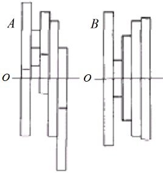
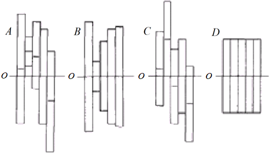

Never estimate intercepts, always estimate centercepts!
Centralização e escalonamento de dados: Aplicação na Engenharia de Avaliações
Luiz Fernando Palin Droubi 1, 2, 
@lfpdroubi
lfpdroubi@gmail.com
Norberto Hochheim 1
hochheim@gmail.com
Carlos Augusto Zilli1, 3 Willian Zonato1, 2
1 PPGTG, UFSC
2 SPU/SC
3 UNISUL
Centralização
“Never estimate intercepts, always estimate centercepts!”
A centralização de dados corresponde à subtração dos dados amostrais de cada variável, da sua média amostral ou outro valor característico. Matematicamente, isto pode ser representado na fórmula a seguir:
\[x_{ij} = x_{ij} - \bar{x_j} \qquad \forall i \in 1..n, j \in 1..p\] onde:
- \(x_{ij}\) é o valor observado para o dado amostral \(i\) para a variável \(j\);
- \(\bar{x_j}\) é o valor da média amostral para a variável \(j\);
- \(n\) é o número de dados amostrais e \(p\) é o número de parâmetros do modelo.
A figura 1 ilustra esse processo:

Figura 1: Centralização em relação à média de cada variável
Quando feita em relação à média, as variáveis centralizadas ficam com média igual a zero. Isto pode ajudar na interpretação do modelo de regressão, especialmente quando da presença de interação entre as variáveis.
Quando feita em relação à valores referenciais que estas variáveis podem assumir, como os dados de um imóvel paradigma na Engenharia de Avaliações, o intercepto do modelo resulta significativo, pois este representará o valor da variável dependente para a situação paradigma.
Escalonamento
Normalmente as variáveis de determinada amostra são observadas em escalas diferentes entre si. Neste caso, pode ser conveniente realizar um processo chamado de escalonamento de variáveis. O tipo mais comum de escalonamento é o de variância (Variance Scaling), muitas vezes chamado de padronização, o que está ilustrado na figura 2.

Figura 2: Escalonamento da variância
Matematicamente, isto pode ser representado na fórmula a seguir:
\[x_{ij} = \frac{x_{ij} - \bar{x_j}}{\sigma_{x_j}} \qquad \forall i \in 1..n, j \in 1..p\] onde:
- \(\sigma_{x_j}\) é o valor do desvio-padrão amostral da variável \(j\);
A padronização dos dados pode ser importante para reduzir a multicolinearidade entre as variáveis independentes.
Além disto, a padronização dos dados amostrais pode reduzir significativamente o erro computacional (Matloff, 2017) devido ao arredondamento.
Além disto, se o objetivo do modelo é a predição de valores, o ideal é que se mantenham o maior número de variáveis explicativas possíveis, adotando-se um cutoff maior para os p-valores, entre 0,25 e 0,35 (Matloff 2017). Como o escalonamento de variáveis pode reduzir os p-valores, mais variáveis podem ser aproveitáveis para o modelo, melhorando o poder de predição do mesmo.
Estudos de Casos
Para exemplificar a utilização da centralização e do escalonamento de dados, foram elaborados dois estudos de casos.
No primeiro caso, em um loteamento com topografia variável, onde, além da
centralização das variáveis em relação ao lote paradigma, a variável inclinacao
foi padronizada (centralizada em zero e escalonada em relação ao seu desvio-padrão)
para possibilitar a obtenção do grau I de Fundamentação da NBR-14.653-02. No
segundo caso, num loteamento com diferentes regras de incorporação, foi
aplicada novamente a centralização das variáveis em relação a um lote paradigma,
com o escalonamento da variável Distância ao Mar.
Loteamento com topografia variável
Para este caso, as variáveis foram centralizadas em relação a um lote paradigma
com características: plano, seco, com 15m de frente e 30m de profundidade. Além
disto, os termos polinomiais da variável inclinação foram padronizados.
| VU | ||
| (1) | (2) | |
| CONSTANT | 44,813 | 54,265 |
| (9,368)*** | (2,584)*** | |
| FRENTE | 0,993 | 0,997 |
| (0,508)*** | (0,508)*** | |
| PROFUNDIDADE | -0,179 | -0,178 |
| (0,146)* | (0,146)* | |
| I(INCLINACAO2) | -173,083 | -1,617 |
| (170,248) | (1,295)* | |
| I(INCLINACAO3) | -1.071,862 | -0,889 |
| (771,291)** | (0,533)** | |
| PEDOLOGIAPANTANOSO | -21,201 | -21,111 |
| (3,727)*** | (3,701)*** | |
| Observations | 18 | 18 |
| R-squared | 0,825 | 0,825 |
| Adjusted R-squared | 0,752 | 0,752 |
| Residual standard error (df = 12) | 6,054 | 6,061 |
| F statistic (df = 5; 12) | 11,323*** | 11,291*** |
| Notes: | p < ,1; p < ,2; p < ,3 | |
Loteamento com diferentes regras de incorporação
Para este caso, as variáveis foram centralizadas em relação a um lote paradigma de 450m², com 15m de testada e viabilidade para 2 pavimentos. A distância ao mar foi centralizada a 500m do mar, valor próximo à média amostral, além de ter sido escalonada.
| VU | ||
| (1) | (2) | |
| CONSTANT | 1.644,436 | 2.096,935 |
| (686,599)*** | (120,139)*** | |
| I(AREA2) | -0,001 | -0,002 |
| (0,001)* | (0,001)** | |
| TESTADA | 111,239 | 100,510 |
| (45,684)*** | (32,130)*** | |
| DIST_MAR | -2,059 | -640,190 |
| (0,289)*** | (86,830)*** | |
| PAVIMENTOS4 | 1.891,938 | 1.912,312 |
| (296,639)*** | (291,943)*** | |
| Observations | 34 | 34 |
| R-squared | 0,833 | 0,839 |
| Adjusted R-squared | 0,810 | 0,817 |
| Residual standard error (df = 29) | 453,253 | 445,106 |
| F statistic (df = 4; 29) | 36,151*** | 37,754*** |
| Notes: | p < ,1; p < ,2; p < ,3 | |
Referências
Matloff, Norman. 2017. Statistical Regression and Classification. Chapman; Hall/CRC. https://doi.org/10.1201/9781315119588.